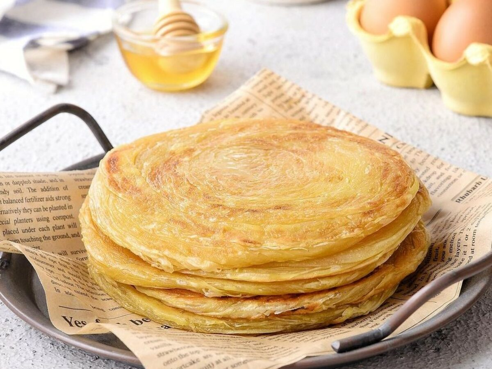
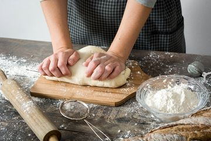
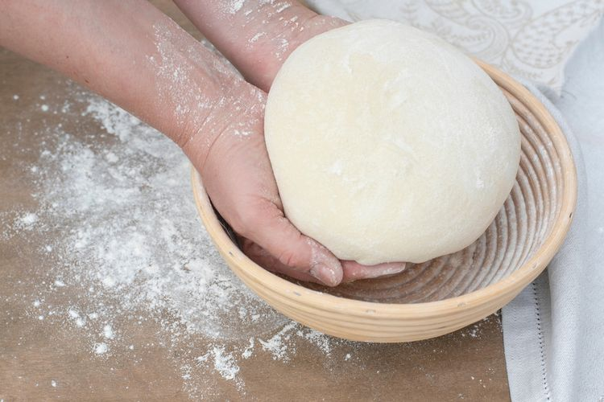

Resep Kue Maryam

Bahan-bahan :
-
250 gram tepung terigu
-
1 butir telur
-
3 sdm margarin, lelehkan
-
100 ml air hangat
-
2 sdm susu bubuk (optional)
-
1/2 sdt garam
-
Margarin leleh untuk olesan
-
Minyak untuk merendam
Langkah-langkah :
-
Campur semua bahan roti jadi satu
-
Uleni sampai kalis (aku pake tangan) jangan takut adonan sampai lengket ya,
lumuri tangan sesekali dengan tepung (tapi jangan menambahkan tepung)
uleni terus sampai adonan kalis

-
Kalisnya adonan canai tidak sekalis adonan roti ya,
kira-kira seperti ini sudah cukup.
